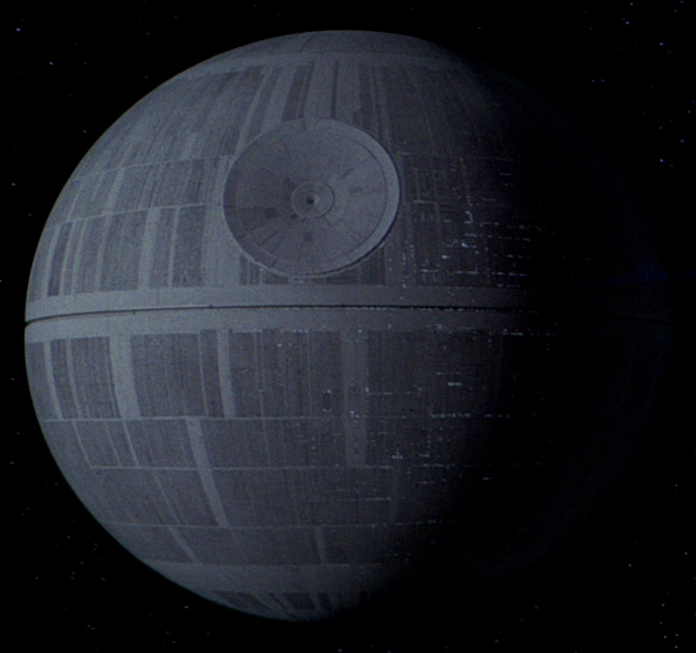
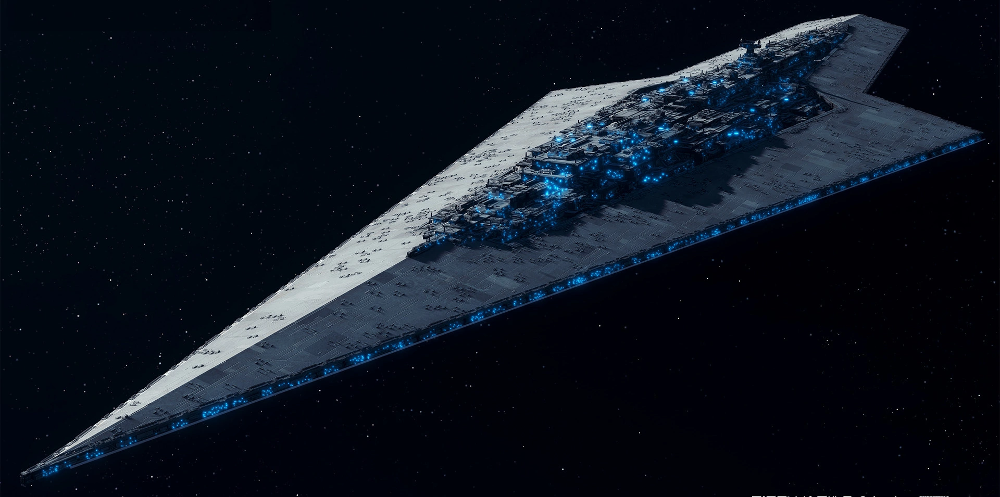
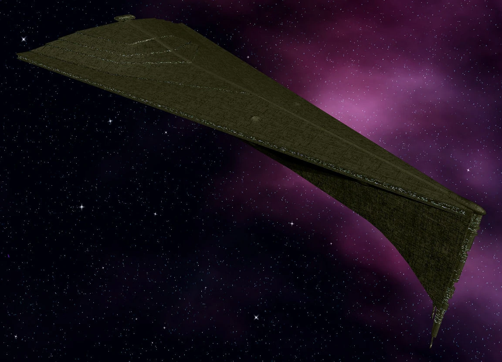

| Image | Text |
|---|---|
| The Early Empire | |
|
|
Once the Galactic Empire had been established, Palpatine immediately set forth to accomplish the main pillars of his campaign. Those pillars being, to root out the corrupt elements held over from the Old Republic, establishing law and order throughout the galaxy, starting numerous mega-projects to boost employment in the construction sector, and rooting out any remaining traces of the evil child kidnapping survivors of the Jedi Order. Unfortunately despite being wildly successful in all of his endevours, and despite receiving unanimously glowing reviews from all respondents of periodic satisfaction surveys he sent out to all galactic citizenry, things weren't all sunshine and roses for our dear friend Palpatine. In fact, there was a small minority of haters who were jealous of his good looks and top-tier sense of humor, and so formed a terrorist group rather than accept Palpatine's love. After many years of Palpatine lovingly and patiently waiting for these rebels to return to the fold just like the father in the parable of the Prodigal Son, he was finally forced to take serious action after a rebel attack killed countless patriotic stormtroopers and innocent civilians. With much sorrow, Palpatine greenlit the completion of the first death star. Shortly after it was completed, a loyal agent of his had discovered the location of the rebel's base on Yavin. Unfortunately another planet named Alderaan had been blown up in the process of discovering the location of the rebel's base, but at the end of the day most people agreed that Alderaanians were kind of asking for it by not having any weapons with which to defend themselves. Afterall, the snooty, ivory tower Alderaanian's stubborn refusal to purchase any weapons not only left themselves defenseless, but hurt the blue collar workforce employed by the arms manufacturing industry. In any case, the death star was immediately despatched to rid the galaxy of the rebel presence and finally restore peace. Unfortunately one thing led to another and the death star was blown up by some random farmboy with a girl's haircut, he immediately sent it out to nip the terrorist group, resulting in the death of over 2 million loyal imperial servicemen and women onboard. |
| The Late Empire | |
|
|
After personally calling the surviving family members of each and every imperial patriot who lost their lives in the first death star to notify them of their loss, Palpatine immediately got to work building the next death star. And this time, it wouldn't have a vent shaft leading all the way into the reactor that would allow a single one man fighter destroy a moon sized station. The following years flew by in the blur, and although Palpatine was happy he knew he could never fully be at peace until the vicious terrorist rebels were finally brought to justice. But soon enough the time had arrived for the final showdown. The Emperor brilliantly lured the overconfident rebels into a devistating trap. Unfortunately for both the Emperor and the Galaxy at large, there was one thing he hadn't anticpated. Some cannibal teddy bear creatures native to the nearby one. And so one thing led to another, and the second death star was destroyed, and Palpatine along with it. |
Imperial Superweapon Technical Specifications Table
| Img | Project | Crew Size |
Size | Description |
|---|---|---|---|---|
| See your tax credits at work! These are just a few of the glorious Imperial mega-construction projects that have provided millions of high paying jobs to the galaxy's blue collar workers. | ||||
|  | Death Star I | ~2m | 120km³ | For further information, click here to access the Imperial Database. |
| Death Star II | ~2.5m | 160km³ | For further information, click here to access the Imperial Database. | |
|  | Executor | ~280k | L=19km | For further information, click here to access the Imperial Database. |
|  | Eclipse | ~850k | L=17.5km | For further information, click here to access the Imperial Database. |